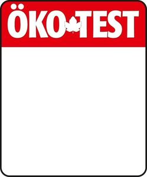

Trade Mark Journal No.2025/010 7 March 2025
WO0000001827416 (16,35,36,38,41,42,45)
Office of origin: European Union Intellectual Property Office (EUIPO)
Date of International Registration:8 August 2023
Date of designation in the UK:
8 August 2023

The mark contains the colours red, black and white.
- Class 16
- Printed matter, especially magazines, books for test preparation, books, brochures, books containing consumer information, year books and guides; paper, cardboard and goods made from these materials (included in this class); stationery stickers.
- Class 35
- Consumer consultancy and advice; consumer information and consultancy with regard to the selection of goods and services, in particular using test and investigation results and by means of quality judgements; conducting public opinion polls and business and market research surveys; consumer consultancy and advice by means of statistical analysis and reporting services; collating data for providing information on the internet; compilation of directories for publishing on the internet; advertising services to promote public awareness of environmental issues and initiatives; advertising services to promote public awareness of health issues and initiatives; advertising in relation to goods characteristics, in particular with reference to test results, quality judgements and goods tests; advertising in relation to service features, in particular with reference to test results, quality judgements and goods tests; advertising using test and investigations results and quality judgements; advertising (including advertising by sponsoring and merchandising), including on and via the internet; advertising for sales activities, for others, including on and via the internet; market research services regarding the customers' responses; information relating to advertising; compilation of statistics relating to advertising; dissemination of advertising matter; direct mail advertising; advertising by mail order; publicity columns preparation; outdoor advertising; television advertising; online advertising on a computer network; personnel recruitment; direct mail advertising; cinema advertising; radio advertising; electronic billboard advertising; publication of advertising material.
- Class 36
- Consultancy and information in connection with investments; income tax financial advice; consultancy and information in connection with the concluding of insurance agreements; financial consultancy for consumers using test and investigation results; analysis and assessment of financial and insurance products; consumer consultancy and advice relating to tax issues; financial services provided by actuaries, banking specialists, in particular for obtaining information for the assessment of goods and service characteristics.
- Class 38
- Transmission of information via electronic media and in films and broadcasts; providing access to data in electronic databases and on electronic storage media; online services, namely the transmission of information, messages, texts, drawings and images via online services and multimedia services; collection and transmission of electronic messages; providing access to Internet portals; providing access to communication forums on the internet; services in the communications sector, including transmission, dissemination and sending of audio and video via computer networks, in particular via the internet; gathering, supply and transmission of information in the form of data, images, graphics, audio and/or audiovisual material by means of computer and/or communications networks; news agencies; transmission and broadcasting of radio, television and video programmes; real-time transmission of data (streaming); electronic transmission and streaming of audio and video material on global and local computer networks; transmission of video podcasts; transmission of podcasts.
- Class 41
- Publication of magazines, books, brochures and guide books, also in electronic form; editing of printed and electronic media products; publication of product tests and service trials, also in electronic form; publication of printed matter relating to consumer consultancy and advice, including in electronic form, other than for advertising purposes; multimedia publishing of electronic publications (other than for advertising purposes), containing information and data relating to optimum private financial management and/or containing information and data relating to environmentally conscious and health-conscious behaviour; providing electronic publications for consumer information; services provided by editors and newspaper reporters; radio, film and television production; audio, film, video and television recording services; news reporting services in the fields of consumer information, ecology and health; library services relating to documents stored and retrievable via electronic media; entertainment in the form of news programmes, reports and interviews; publication of opinion polls and surveys; publication of texts in relation to science-based goods tests and service inspections (other than for scientific purposes or advertising purposes); educational services provided by universities and institutes, in particular chemical, biological, physical and technical universities and institutes, in particular for obtaining educational information for the assessment of goods and service characteristics; arranging and conducting entertainment services via the applications for mobile digital terminals.
- Class 42
- Conducting and evaluating science-based goods tests and service inspections; conducting and evaluating quality inspections; conducting and evaluating technical tests and inspections; consultancy relating to the conservation of energy; energy auditing; scientific information and consultancy relating to CO2 equalisation; detection and evaluation of emissions and pollutant concentrations; detection and evaluation of chemical, biological and physical information relating to hazards and risks; scientific information relating to the safety of chemical, biological and physical products; scientific information and consultancy relating to health compatibility and environmental compatibility of goods; scientific and technological services, engineering services, chemical and biological laboratory services provided by of biologists, chemists, mathematicians, nutritional scientists, physicists, engineers and members of professional groups with comparable university-level or technical college education; inspection [testing] and quality assessment services of goods, in particular with regard to ecological and consumer policy aspects; scientific laboratory services; architectural consultancy; storage of data in electronic databases and on electronic data carriers; operation of databases, namely storage of data in computer databases and installation, updating and maintenance of database software; conducting and evaluating science-based goods tests and service inspections (other than for scientific purposes); evaluation of goods tests and service inspections by means of the mathematical application of assessment and weighting schemes; providing information in relation to environmental protection; services provided by chemical, biological, physical and technical research laboratories, food chemists, chemists, pharmacologists, nutritional scientists, physicists, mathematicians, in particular for obtaining information for the assessment of goods and service characteristics; hosting and operating of platforms on the internet; hosting and operating software applications for mobile digital terminals.
- Class 45
- Consumer consultancy and advice in legal matters; legal services, in particular for obtaining information for the assessment of goods and service characteristics; granting of licences and industrial property rights; copyright and industrial property rights management.
ÖKO-TEST Verlag GmbH & Co KG
Representative: Nadine Dinig, Kasseler Str. 1a, 60486 Frankfurt am Main, GERMANY